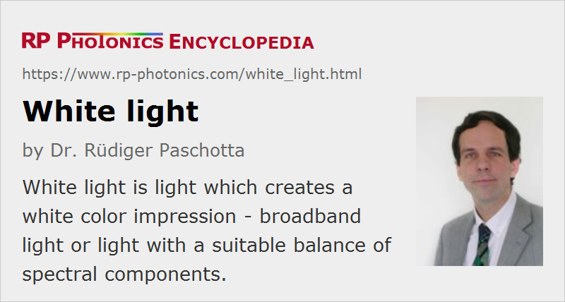

White Light
Definition: light which creates a white color impression
German: Weißlicht, weißes Licht
Categories: general optics, light detection and characterization, vision, displays and imaging
How to cite the article; suggest additional literature
Author: Dr. Rüdiger Paschotta
White light is light which looks white to the human eye. It can be broadband light, where the spectral radiance does not vary too much within the visible spectral region, or light with a structured optical spectrum but still a suitable balance of spectral components. The perceived color tone is ultimately determined only by the strength with which the L, M and C photoreceptors of the human eye are excited; see the article on color vision for details on the physiological basis. For some applications, however, human perception is not the aspect of interest, and the demands on the properties of the white light optical spectrum may be different.
White Color Tones
There are different shades (color tones) which can all be called white – not only concerning luminance, but also in terms of white color tones:
- Warm white (or soft white) has some chromatic tendency towards yellow or even orange.
- Cold white (or cool white) light has a tendency towards the blue.
- The term daylight white is not really clear, as the color tones of daylight can vary strongly, depending the time on the day, weather conditions, whether primarily direct sunlight or light from the blue sky is collected, etc.; often the term is used for relatively cool color tones.
- Also not well defined is bright white, but it is tentatively cool. Note that brightness is normally associated with intensities rather than color tones.
Such variations can largely be described through the color temperature of the light or the light source generating it. Even consumers can take into account color temperatures in the selection of lighting products, because those values are now frequently specified. Low color temperatures of the order of 3000 K are often preferred for living rooms, creating a more cozy atmosphere and promoting relaxation, while higher color temperatures are preferred for working spaces including offices, where they can support the concentration and reduce the tendency to become tired. Note, however, that the physiological effects related to the regulation of the circadiane rhythm (caused via a special type of photoreceptors in the eye, not used for vision) are mostly determined by the content of blue light and not accurately quantified with the color temperature alone.
More generally and in more detail, the characteristics of white light can be specified with its chromaticity (e.g. in CIE XYZ color space, see Figure 1), which can be obtained with colorimetric measurements.

{kind=link}
Standard Illuminants
The CIE (Commission Internationale de l'Éclairage = International Commission on Illumination) has defined various standard illuminants for different types of white light. Particularly important is the illuminant series D, which approximates daylight more realistically than earlier versions B and C. A particularly important version, used as a standard in various circumstances, is illuminant D65 with a correlated color temperature of 6504 K.
Standard illuminant E has a constant spectral exitance (in terms of Me,λ) throughout the visible spectrum, leading to a correlated color temperature of 5455 K.
Standard illuminant series F has been designed to represent fluorescent lamps with various common types of phosphors. Similarly, a new series of standard illuminants for LED lighting has been published in 2018, as LED lighting is getting more and more common.
Spectral Characterization of White Light
Each white light source has a certain white point which is not fully characterized by the correlated color temperature alone. For the standard illuminants, chromaticity coordinates in different color spaces are available.
Note that the appearance of colors of illuminated objects does not only depend on the white point of the illumination source; there can be substantial color deviations for light sources with structured spectrum against continuous light sources such as daylight. The magnitude of such deviations can be quantified with the color rendering index of a white light source.
Colorimeters can be used to measure chromaticity coordinates and correlated color temperatures.
White Light Decomposition and Mixing
White light can be decomposed into its spectral components, for example by sending it through a dispersive prism or to a diffraction grating. Already in the early times of Isaac Newton, it was discovered that white light can be decomposed into several colored components, although the wave nature of light was not yet clearly recognized.
On the other hand, white light can be generated by superimposing different spectral components. That principle is applied in many fields, for example in the use of RGB sources and in white LED emitters (see above).
Applications of White Light
The most important application of white light is lighting of living rooms, offices, fabrication halls, theaters, etc. Huge amounts of white light are nowadays generated, and the densely populated areas are thereby even easily recognized from space.
There are other white light applications in a wider area of illumination, for example for microscopes, displays, measurements in colorimetry and machine vision.
For some specific applications particularly in science, white light sources with a high radiance are required. For such purposes, one may e.g. use high intensity discharge lamps. If the required radiant flux is low, but the radiance needs to be very high, sources based on supercontinuum generation can be used.
Lighting cabinets are available which can accurately produce one or several standard illuminants, eliminating variable influences from other ambient light. They can be used to objectively judge and measure the color tones of objects.
Questions and Comments from Users
Here you can submit questions and comments. As far as they get accepted by the author, they will appear above this paragraph together with the author’s answer. The author will decide on acceptance based on certain criteria. Essentially, the issue must be of sufficiently broad interest.
Please do not enter personal data here; we would otherwise delete it soon. (See also our privacy declaration.) If you wish to receive personal feedback or consultancy from the author, please contact him e.g. via e-mail.
By submitting the information, you give your consent to the potential publication of your inputs on our website according to our rules. (If you later retract your consent, we will delete those inputs.) As your inputs are first reviewed by the author, they may be published with some delay.
See also: white light sources, color vision
and other articles in the categories general optics, light detection and characterization, vision, displays and imaging
|  |
If you like this page, please share the link with your friends and colleagues, e.g. via social media:
These sharing buttons are implemented in a privacy-friendly way!